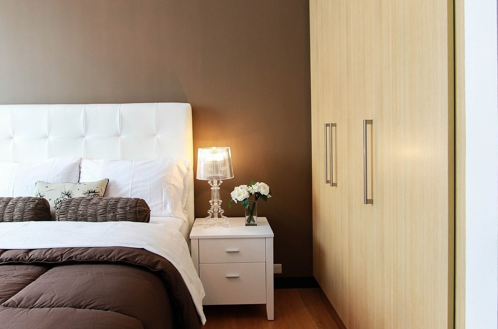
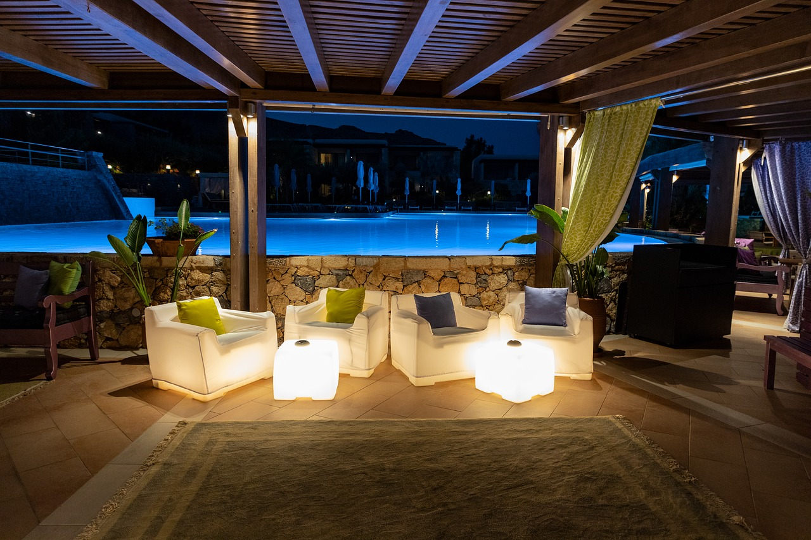
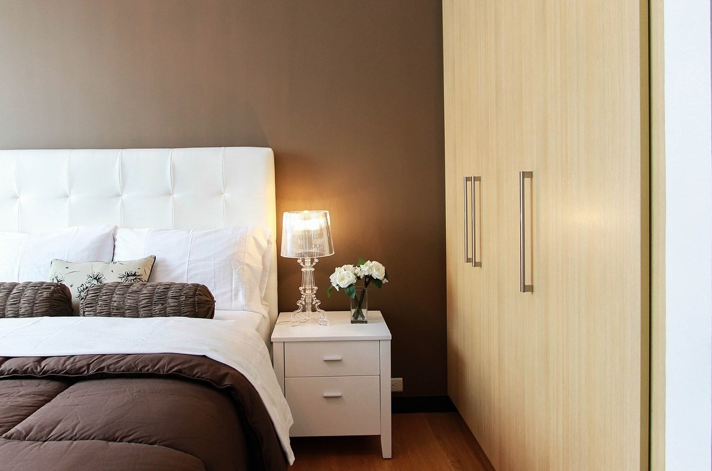
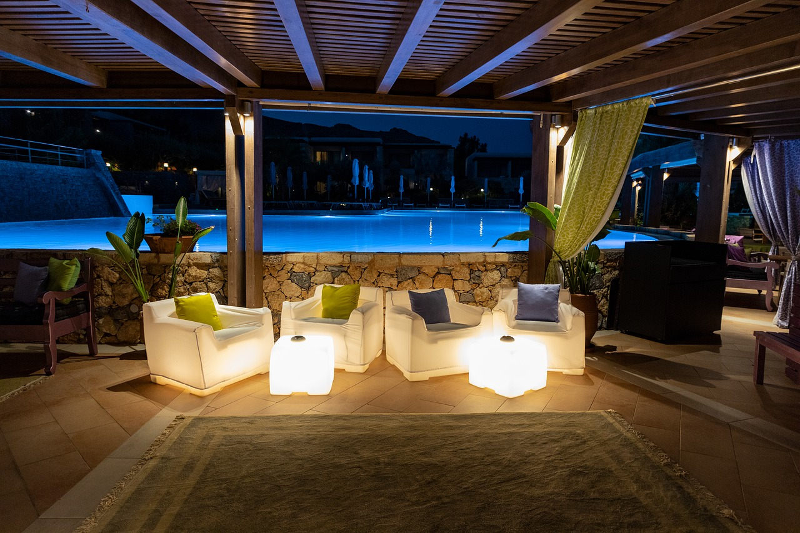

|

Luxury Rooms |
 Free Gym |

Relaxing Stay |
Welcome To The Loch Inn

The Loch Inn was founded by Henry Porter. We are located in the Inverness, Scotland. The hotel offers a relaxing stay, with excellent and luxury dining facilities. The Loch Inn offers tours for travellers on vacation. For corporate stays,The Loch Inn provides facilities such as a wake-up call service, 24-hour dining, free WIFI,conference rooms, free laundry and pick up services. Create lasting memories this winter with The Loch Inn.... The Loch Inn was founded by Henry Porter. We are located in the Inverness, Scotland. The hotel offers a relaxing stay, with excellent and luxury dining facilities. The Loch Inn offers tours for travellers on vacation. For corporate stays,The Loch Inn provides facilities such as a wake-up call service, 24-hour dining, free WIFI,conference rooms, free laundry and pick up services. Create lasting memories this winter with The Loch Inn

|

Luxury Rooms |
Free Gym |

Relaxing Stay |